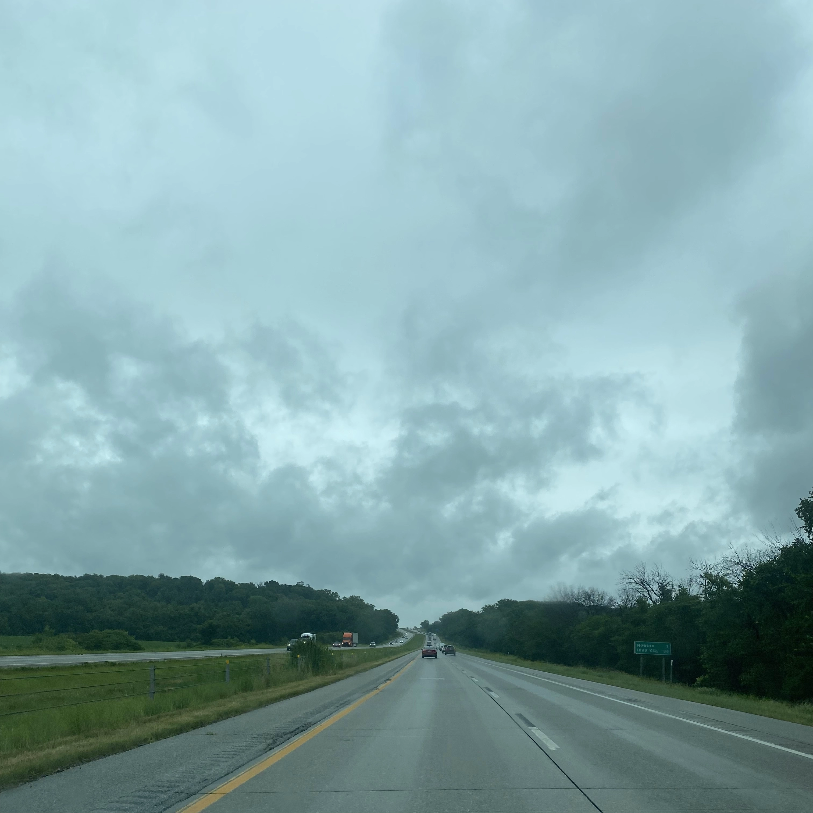
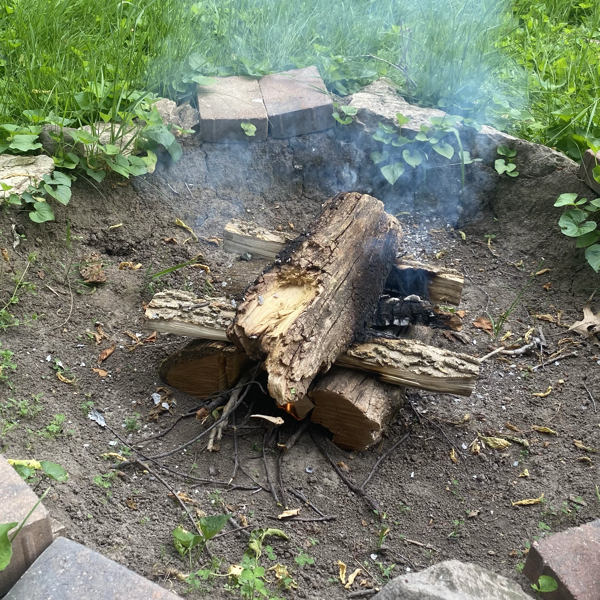
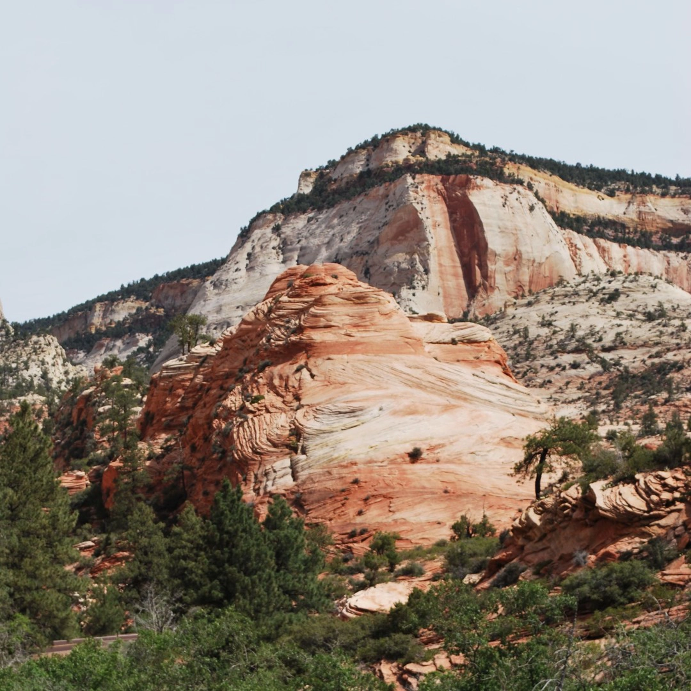

3. Every jail is racist
June 23, 2026 | Recorded June 21, 2026
Resources:
Nikole Hannah-Jones—The 1619 Project
Mariame Kaba—We Do This 'Til We Free Us
Michelle Alexander—The New Jim Crow
Angela Davis—Freedom is a Constant Struggle

2. Let people have fun on the ped mall
June 4, 2026 | Recorded May 29, 2026 in Iowa City
Resources:
Ibram X. Kendi—How to be an Antiracist
Michelle Alexander—The New Jim Crow
Courtney Ariel—The Business of Prioritizing White Comfort
Tema Okun—Right to Comfort, Power Hoarding & Fear of Conflict

1. What the fuck is "public land"
May 29, 2026 | Recorded May 17, 2026 at Zion National Park
Resources:
Robin Wall Kimmerer—Braiding Sweetgrass, The Serviceberry
Nick Estes—Our History is the Future, cohosts the Red Nation Podcast
Melanie Yazzie & Elena Ortiz—Red Power Hour vs. Indigenous Futurism
Sikowis Nobiss, Great Plains Action Society—End Stage Iowa: Big Ag’s Sacrifice Zone and Indigenous Resistance